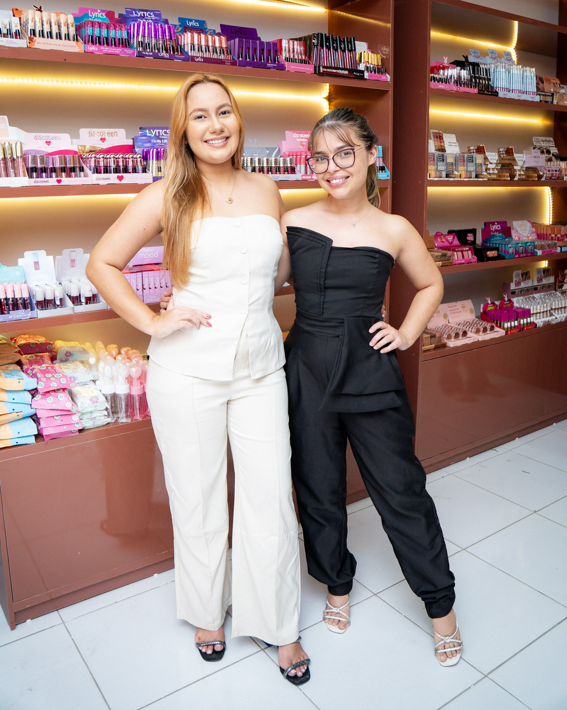
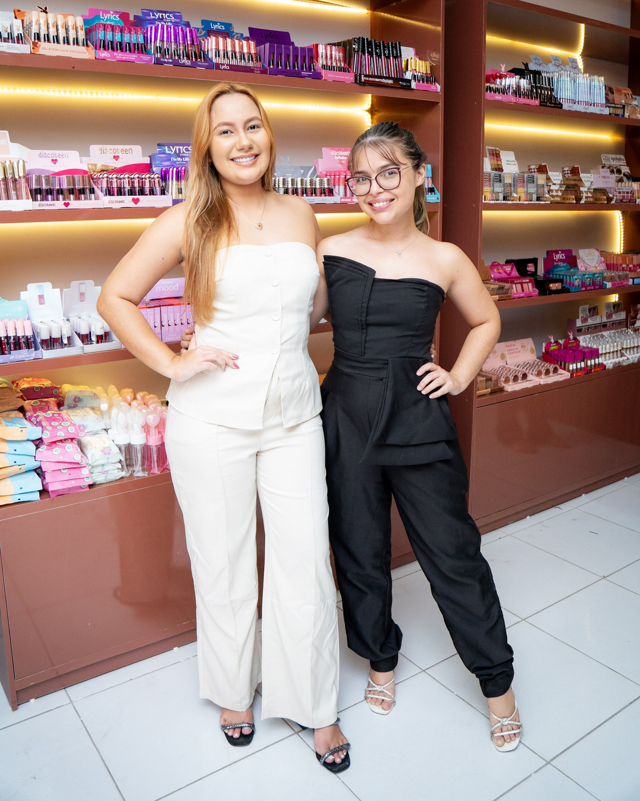

empresarial | balonmakes
O ensaio empresarial realizado para a Balonmakes foi um trabalho que nos encheu de orgulho e satisfação. A empresa, localizada nos municípios de Pacajus e Barreiras, é referência em seu segmento e merecia registros à altura de sua trajetória.
Os empresários Felipe e Joyce são pura simpatia e carisma, o que tornou o ensaio ainda mais leve e prazeroso de realizar. Sua energia positiva e dedicação transpareceram em cada clique, refletindo perfeitamente a essência da Balonmakes.
Para a INTS Fotografia, participar desse projeto foi uma oportunidade única de mostrar nosso olhar também no universo corporativo. Esse trabalho acrescenta ainda mais valor ao nosso portfólio, reforçando nosso compromisso em eternizar momentos e histórias em diferentes áreas.
Encerramos com o sentimento de gratidão por termos feito parte desse capítulo especial. Desejamos à Balonmakes, ao Felipe e à Joyce ainda mais sucesso, prosperidade e conquistas. Foi uma honra registrar a força, a simpatia e a visão desse casal de empresários inspiradores.
 
